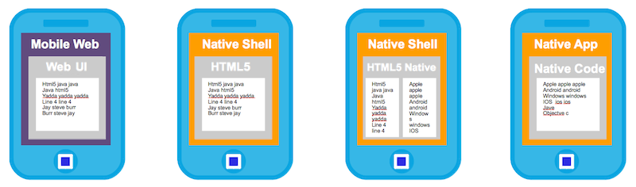

This wiki page will give an overview of what hybrid applications are, what tools and frameworks are out there to help create them, and some teasers for upcoming examples if you wanted to get involved.
The term "hybrid mobile application" can be a bit confusing for new developers Hybrid apps, are native mobile applications that are built using technologies other than the native SDK’s for the platforms. Most of them claim "write once run anywhere", however the truth is more like "write almost once, and run almost anywhere". As with most things there are different degrees of compatibility and tinkering that is required.

Hybrid application projects usually involve web based technologies such as JavaScript, HTML, etc… There are a number of frameworks out there that assist with this. They typically involve some sort of wrapper and/or compiling phase to turn your common code into these native applications. All of these frameworks provide different degrees of access to the native device’s functionality. Once these applications are built they can be deployed just like any other native application - i.e. through appstores, or direct links depending on the device.
The leading frameworks in this area are detailed below with links to examples, and future plans (jira’s). If you want to get involved jump right in!
Project link: http://incubator.apache.org/cordova/
In 2011, Adobe/Nitobi donated the PhoneGap codebase to the Apache Software Foundation (ASF) for incubation. The first name of this donation was called Callback, which has now renamed itself to Apache Cordova. The Apache Cordova is the heart of the PhoneGap project, which is basically a distribution of the Apache Cordova project. More details about the relationship of the two projects can be found in a detailed blog post.
Apache Cordova is one of the most popular hybrid frameworks around. It uses a native wrapper approach and is developed primarily with direct web technologies. It also provides a JavaScript bridge into native functionality in the form of plugins.
Apache Cordova version of our examples - AEROGEAR-15
Walkthrough of using Cordova based apps on JBoss - AEROGEAR-39
A very neat tool developed by the PhoneGap team, which offers a service on-top of Apache Cordova. One of the biggest pains for hybrid and cross device development in general is compiling and building the actual applications for each device. The Adobe® PhoneGap™ Build tool lets you upload your web based application, and it will generate all of the device specific apps for you!
Integrate our example above with PhoneGap Build - AEROGEAR-105
Develop a workflow for CI integration in OpenShift, JBoss AS, and PhoneGap build - AEROGEAR-106
Tutorial of how to do all of this in your own environment - AEROGEAR-107
Project link: http://developer.appcelerator.com/
Appcelerator is another leading hybrid application project. There approach is to primarily use JavaScript programming language and their SDK to development your application. They are then able to "compile" this down to native applications. One benefit of this is more access to native UI widgets, and APIs. The downside is a new SDK to learn, however they do provide there own tooling for that.
Appclerator example with JBoss - AEROGEAR-108
There are other projects out there as well at different levels of maturity. These include Sencha, RhoMobile, Trigger.io etc…